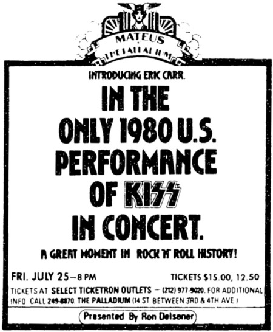
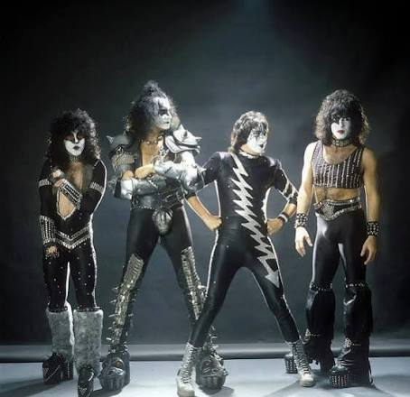

El 25 de julio de 1980 quedó marcado en la historia del rock como el dÃa en que KISS inició una de sus transiciones más importantes. Tras la salida del baterista original Peter Criss, la banda neoyorquina presentó oficialmente a su nuevo integrante, Eric Carr, durante un concierto en el Palladium de la ciudad de Nueva York. Antes de ese primer show existÃa mucha expectación de la Kiss Army, ya que el cariño que se le tenia a Criss era muy significativo y el que llegara un nuevo miembro a tomar su lugar no resultarÃa fácil.
Fue una noche de nostalgia para Ace, Paul y Gene. Y un sueño hecho realidad para Eric Carr. KISS planeó una actuación especial en el Palladium (anteriormente The Academy of Music) en Nueva York para presentar a Eric a sus fans más fieles de su ciudad natal. Hubo muy poca publicidad. El espectáculo de una sola noche fue mayormente un asunto de boca en boca. Aunque hoy en dÃa es pequeño para KISS, el salón fue elegido por motivos sentimentales.

Este espectáculo no solo significó el debut de Carr en los escenarios, sino también la introducción de un nuevo personaje al universo de la banda: "The Fox" (El Zorro).
EL CAMINO HACIA EL PALLADIUM
La salida de Peter Criss a principios de 1980 dejó un vacÃo complejo de llenar. Paul Charles Caravello, un músico neoyorquino de 30 años que trabajaba reparando estufas junto a su padre, audicionó para el puesto. Su talento con las baquetas y su actitud humilde impresionaron de inmediato a los lÃderes de la banda. Tras ser seleccionado, adoptó el nombre artÃstico de Eric Carr.
Inicialmente, el equipo de diseño de KISS intentó crear un personaje de "Halcón" para Carr. Sin embargo, el diseño no convencÃa al baterista ni se adaptaba bien a su personalidad. A pocos dÃas del debut, el propio Carr diseñó el concepto de "El Zorro", un maquillaje que complementaba perfectamente su melena y su presencia escénica.

Una noche de fuego, sudor y consolidación. Desde los primeros acordes de "Detroit Rock City", Eric Carr demostró una energÃa y una velocidad que transformaron las canciones clásicas del grupo. Su estilo de tocar era notablemente más pesado, rápido y preciso que el de su predecesor, inyectando una dosis de heavy metal que la banda necesitaba con urgencia para afrontar la nueva década.
El repertorio de esa noche equilibró los grandes éxitos del catálogo de los años 70 con los temas más recientes de Unmasked "Is That You?", "Talk To Me" y "You're All That I Want". La crÃtica y los asistentes coincidieron en que la inclusión de Carr rejuveneció la dinámica de la banda sobre el escenario, ganándose el respeto instantáneo de la "KISS Army".
El legado de "The Fox": El debut en el Palladium fue el punto de partida de una trayectoria de 11 años de Eric Carr con KISS. El baterista grabó álbumes clave para la evolución del grupo, como Creatures of the Night (1982) y Lick It Up (1983), este último marcando la época en la que la banda se despojó de las máscaras.
Carr permaneció en la banda hasta su trágica muerte en noviembre de 1991, siendo recordado por los seguidores como uno de los miembros más queridos, accesibles y talentosos en la historia de KISS. Aquella noche del 25 de julio de 1980 en Nueva York no solo salvó a la banda en un momento de crisis, sino que dio inicio a una de las eras más potentes del rock clásico.